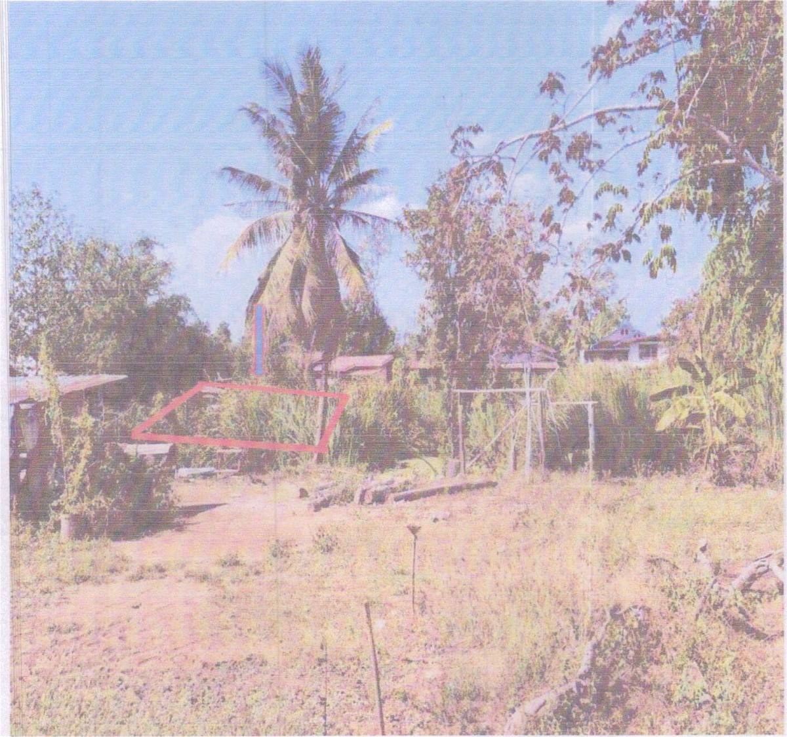

1028%ที่ดิน · ต.ลุ่มลำชี อ.บ้านเขว้า
ขายได้ 150,000 บ. (30/06/2569) · ราคาประเมิน 14,590 · 1028% ของราคาประเมิน
ลำดับ 132 - 1 · ชย.6 มิ.ย./2569 - 1 · โฉนด 44846 · เนื้อที่ 146 ตร.วา · ราคาที่ดินทางการ 100 บ./ตร.วา
- ที่ดินกว้าง 146 ตร.วา
- ราคาประเมินคิดจากราคาทางการเพียง 100 บ./ตร.วา (ราคาตลาดจริงมักสูงกว่า)
- โจทก์บัตรเครดิต/ลีสซิ่ง (หนี้มักน้อย ทรัพย์ปลอดภาระ)
- แย่งกันแรงมาก (เกิน 2 เท่าของราคาเริ่มต้น)
- ราคาประเมินต่ำ เข้าถึงง่าย